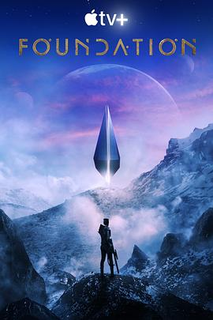

基地 第一季 / Foundation Season 1
又名：银河帝国：基地 / 银河帝国基地
拖了一年终于看完了，精彩的星球宫斗剧，第一季开了第一个foundation端点，感觉和spy family第一季拿一颗星一样。
作品信息
| 导演 | 鲁伯特·桑德斯 / 安德鲁·伯恩斯坦 / 亚历克斯·格雷夫斯 / 珍妮弗·庞 / 罗克珊·道森 / 大卫·S·高耶 |
| 编剧 | 大卫·S·高耶 / 乔什·弗莱德曼 / 奥利维娅·珀内尔 / 劳伦·贝洛 / 利·达纳·杰克逊 / 马库斯·加德利 / 凯特琳·桑德斯 / 莎拉·诺伦 / 维多利亚·莫罗 / 艾萨克·阿西莫夫 |
| 主演 | 李·佩斯 / 杰瑞德·哈里斯 / 卢·洛贝尔 / 劳拉·比尔恩 / 特伦斯·曼 / 利娅·哈维 / 阿尔弗雷德·伊诺奇 / 卡西安·比尔顿 / 丹尼尔·麦克弗森 / 库布拉·萨特 / 普拉维斯·拉纳 / 尼基尔·帕尔玛 / 泰尼亚·米勒 / 克拉克·彼得斯 / 巴迪·斯凯尔顿 / 米多·哈马达 / 艾米·泰格 / 杰弗里·坎托 / 朱莉娅·法里诺 / 布莱恩F.穆尔维 / 达拉赫·奥图尔 / 埃利奥特·考恩 / 萨莎·贝哈尔 / 里斯·谢尔史密斯 / 布莱恩·博维尔 / 金·阿迪斯 / 库珀·卡特 / 萨米尔·富克斯 / 穆里斯·克劳利 / 马克·拉弗里 / 奇波·钟 / Teyarnie Galea |
| 类型 | 剧情 / 科幻 |
| 制片国家/地区 | 美国 |
| 语言 | 英语 |
| 首播 | 2021-09-24(美国) |
| 季数 | 1 |
| 集数 | 10 |
| 单集片长 | 60分钟 |
| IMDb | tt0804484 |
说过什么
2022-07-10 21:41:59
看过 · 时间来自广播，短评来自标记页
拖了一年终于看完了，精彩的星球宫斗剧，第一季开了第一个foundation端点，感觉和spy family第一季拿一颗星一样。
2021-09-25 22:33:13
广播 · 在看
2021-08-24 09:57:14
广播 · 想看
最后一次看到是 2026-08-01T11:05:04+10:00 · 豆瓣原页